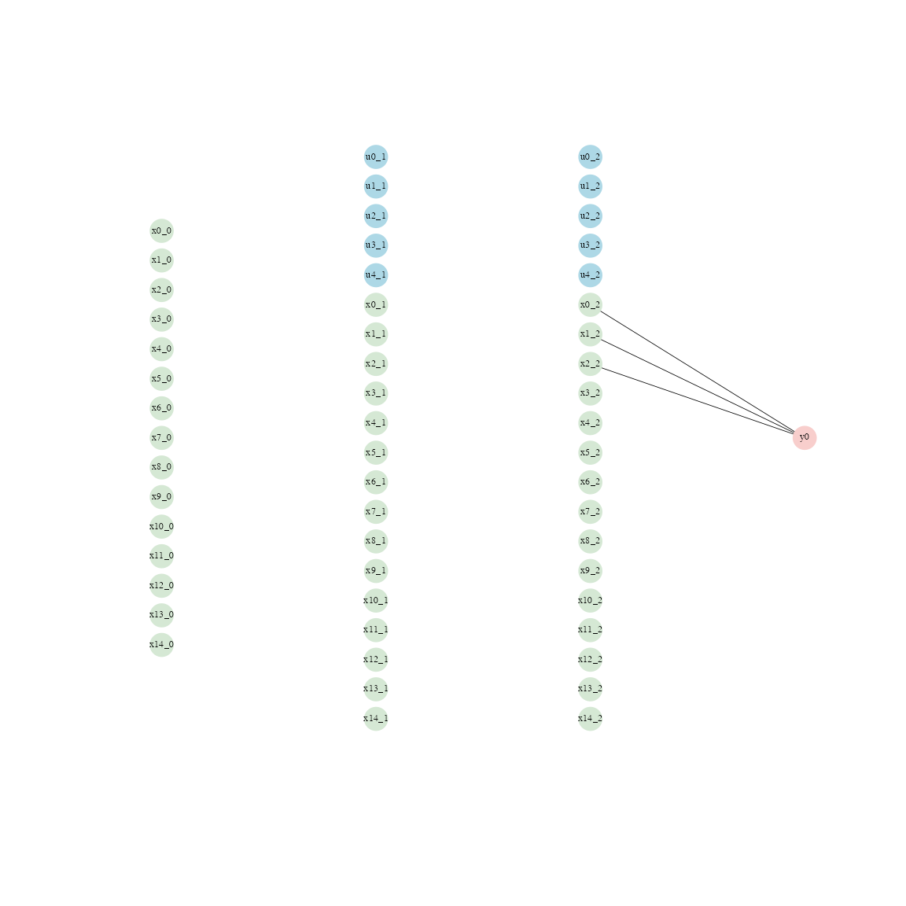

variable_selection_linear_data.RmdWe generate 1000 samples with 15 features, and make 3 of them relevant for the outcome. The goal is to see if we recover the correct variables, and also their coefficients. The data preparation process follows the same steps as in the previous example. Note that the dataset must be a data.frame object before applying the get_dataloaders function.
library(LBBNN)
i <- 1000
j <- 15
set.seed(42)
torch::torch_manual_seed(42)
X <- matrix(rnorm(i * j, mean = 0, sd = 1), ncol = j)
y_base <- c()
y_base <- 0.6 * X[, 1] - 0.4 * X[, 2] + 0.5 * X[, 3] + rnorm(n = i, sd = 0.1)
sim_data <- as.data.frame(X)
sim_data <- cbind(sim_data, y_base)
loaders <- get_dataloaders(sim_data, train_proportion = 0.9,
train_batch_size = 450, test_batch_size = 100,
standardize = FALSE)
train_loader <- loaders$train_loader
test_loader <- loaders$test_loaderHere we must use the “regression” keyword as we have a continuous outcome. We use a relatively small network of 2 hidden layers with 5 neurons in each.
problem <- "regression"
sizes <- c(j, 5, 5, 1)
incl_priors <- c(0.5, 0.5, 0.5)
stds <- c(1, 1, 1)
incl_inits <- 'polarized'
device <- "cpu"
model_linear <- lbbnn_net(problem_type = problem, sizes = sizes,
prior = incl_priors, inclusion_inits = incl_inits,
std = stds, input_skip = TRUE, flow = FALSE,
num_transforms = 2, dims = c(10, 10, 10),
raw_output = FALSE, custom_act = NULL,
link = NULL, nll = NULL,
bias_inclusion_prob = FALSE, device = device)
train_lbbnn(epochs = 50, LBBNN = model_linear,
lr = 0.1, train_dl = train_loader, device = device, verbose = FALSE)
validate_lbbnn(LBBNN = model_linear, num_samples = 2, test_dl = test_loader,
device = device)
#> $validation_error
#> [1] 0.1228187
#>
#> $validation_error_sparse
#> [1] 0.1267759
#>
#> $density
#> [1] 0.1230769
#>
#> $density_active_path
#> [1] 0.01538462Here we have given the dataset as an argument instead of picking a specific sample, where the argument num_data controls how many samples from the dataset we use. Using inds = NULL, we select random samples from the dataset. Explanations are then averaged across these samples.
coef(model_linear, dataset = train_loader, inds = NULL,
output_neuron = 1, num_data = 5, num_samples = 10)
#> lower mean upper
#> x0 0.5885950 0.5929495 0.5964277
#> x1 -0.4201867 -0.4024738 -0.3904432
#> x2 0.4973240 0.5028132 0.5122011
#> x3 0.0000000 0.0000000 0.0000000
#> x4 0.0000000 0.0000000 0.0000000
#> x5 0.0000000 0.0000000 0.0000000
#> x6 0.0000000 0.0000000 0.0000000
#> x7 0.0000000 0.0000000 0.0000000
#> x8 0.0000000 0.0000000 0.0000000
#> x9 0.0000000 0.0000000 0.0000000
#> x10 0.0000000 0.0000000 0.0000000
#> x11 0.0000000 0.0000000 0.0000000
#> x12 0.0000000 0.0000000 0.0000000
#> x13 0.0000000 0.0000000 0.0000000
#> x14 0.0000000 0.0000000 0.0000000We see that the coefficients match the data generating process, and that we only include the relevant features.
Using plot with type = ‘global’ gives us the global explanations, i.e. the features that affect predictions in general.
plot(model_linear, type = "global", vertex_size = 7,
edge_width = 0.4, label_size = 0.4)
We see that everything has been pruned away aside from the linear connections from the relevant features.